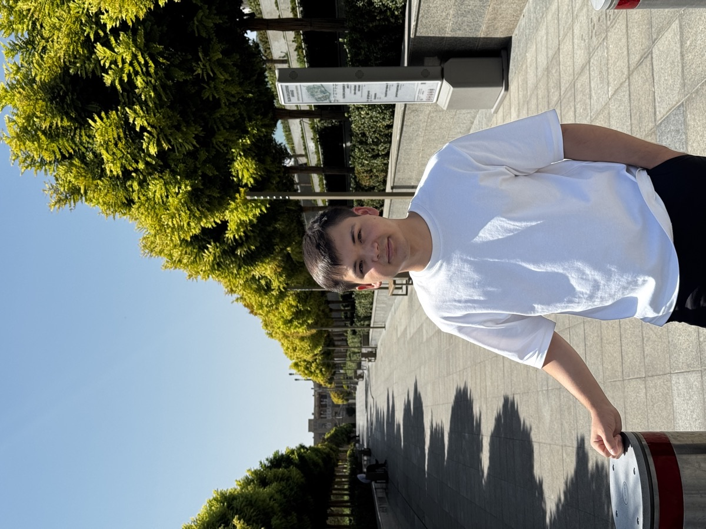

Semantic HTML
Landmarks, forms, metadata
Web Programming Student · Gachon University
I'm a Web Programming student at Gachon University. Over the last few months I went from plain HTML pages to React components, REST APIs and Lighthouse audits. This site is the running record of that: every project links to its live demo and its source.

01 / About
Not a summary of skills. The actual path from a blank HTML file to a React storefront, with the parts that went wrong along the way.
I started the Web Programming course knowing only basic HTML. By Week 3 I was writing semantic markup by hand; by Week 6 I was calling live APIs from the browser and handling loading and error states myself.
The part that changed how I think about code was the accessibility audit: I had to take a deliberately broken page, find every WCAG failure by keyboard and with a screen reader, fix them, and re-measure until Accessibility, Best Practices and SEO all reached 100. After that I stopped treating accessibility as a final check.
The performance task was similar — measure first, change one thing, measure again. Deferring scripts and shrinking images did more than I expected. I still use that habit on every page I ship.
These days I'm most interested in React (props, hooks, effects) and in pages that stay fast and usable on a phone. The group project, MEBEL, is where I'm applying all of it at once.
02 / Toolkit
A growing toolkit from the course: from document structure to client-side APIs, accessibility and deployment.
Landmarks, forms, metadata
Grid, flexbox, variables
DOM, events, validation
Fetch, JSON, error states
WCAG, ARIA, focus order
Lighthouse, image weight
Branches, commits, merges
Static hosting, custom 404
Components, props, hooks
Dev server, production build
03 / Timeline
The course ran twelve weeks. Each row is a real deliverable that is still live on GitHub Pages.
Headings, lists, figures, forms and ARIA basics. The first pages I ever shipped.
Flexbox, grid, responsive breakpoints and the Iron Man / Spider-Man theme I still reuse.
Events, validation, and the first API calls. Book Search came out of this block.
WCAG fixes, focus styles, Lighthouse scores to 100. The week that changed my habits.
Props, lists with keys, hooks, localStorage. Student Directory, Portfolio Gallery and React Lab.
useState, derived values, useEffect with cleanup and AbortController. Shopping cart and the group project.
04 / Selected work
The first card is the group project, MEBEL, which I led the catalogue and cart for. The rest are course deliverables, all live on GitHub Pages with public source. The grid is a React component: search, filters and the details dialog run on state, and the chosen filter is saved in localStorage.
05 / Lessons
Not a skill list. The mistakes that cost me an afternoon, and what I do differently now.
Current focus
useEffect looks simple and isn't. I'm spending extra time on dependency arrays, cleanup functions and AbortController so I stop leaking timers and stale requests.
06 / Get in touch
I'm a student, so I'm not taking paid work yet — but I'm happy to talk about the course, a project, or a study group. GitHub is the fastest way to reach me.